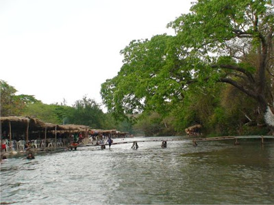
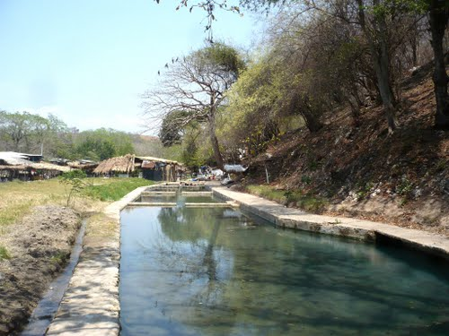
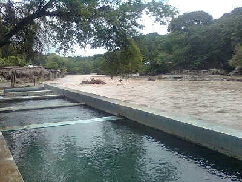
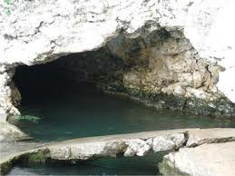
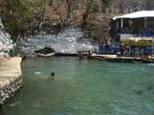

Este balneario natural formado por un manantial de aguas termales sulfurosas.
Formado de aguas sulfurosas, que cuenta con albercas rusticas, grandes áreas verdes, donde es posible realizar días de campo.
Los baños del Carmen estan a 40 minutos aproximadamente de Tuxtla Gutierrez.
Partiendo de la ciudad de Tuxtla Gutierrez, toma la carretera Angostura Tzimol-Comitan, en un recorrido de 56 kilometros; antes de llegar a la localidad de Flores Magon se toma un desvio de 3 kilometros en direccion al poblado de Vicente Guerrero. Donde encontrara el anuncio de los baños del carmen.
Partiendo de Tuxtla Gutiérrez:
Ubíquese en la Carretera Panamericana (A Chiapa de Corzo) continúe por Tuxtla Gutiérrez-San Cristóbal de las Casas/México 190 – gire ligeramente a la derecha hacia Salvador Urbina – continúe a la izquierda hacia CHIS 101 – continúe hacia la izquierda seguido gire a la derecha hasta llegar a los Baños del Carmen.
Las actividades que puede realizar son las actividades de esparcimiento como
balnearios, y las actividades vinculadas al ambiente natural, termalismo.





posicione el mouse sobre las imagenes